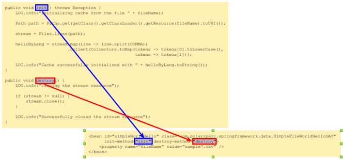
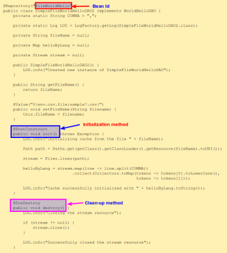
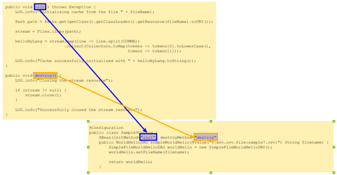

In
Part 2 of this series, we got our hands dirty with constructor injection using the 3 different approaches.
In this part, we will explore the use-case where an application bean is initialized and/or destroyed via a method
call using the 3 different approaches.
There will be situations where we want the state of the collaborator (dependee) object(s) to be initialized with data
from external resource(s), such as file(s) or a database. Typically, in those situations there will be a separate method
defined to initialize the bean and a separate method to clean-up (on shutdown).
Hands-on with Spring Framework Core - 3
We will demonstrate each of the 3 approaches using the simple Hello greeter (in different
languages) example with a little twist - the Hello greetings for the different languages will
be initialized from a file.
XML based Approach
The simple Hello greeter standalone application will output a greetings message for a
chosen language (English, French, etc) and a specified name. In addition, it will tag the sales tax for the country of
the chosen language. The hello message (for a chosen language) and the sales tax (for the country of the chosen
language) are abstracted in the data package, while the greeter is abstracted in the service package.
The interface WorldHelloDAO from the data package has no change and remains the same.
The following is the POJO SimpleFileWorldHelloDAO from the data package that implements
the interface WorldHelloDAO. It reads 'Hello' for a predefined set of languages (English,
French, German, Italian, and Spanish) from a file and stores the data in a java.util.Map:
The method init() opens and reads from the I/O stream for the specified file with
the 'Hello' data for a predefined set of languages. To work in Spring, the method must
take no parameter arguments and return a void.
The method destroy() closes the I/O stream when the application shutsdown. To work
in Spring, the method must take no parameter arguments and return a
void.
The interface HelloGreeter as well as its implementation POJO
SimpleHelloGreeter from the service package have no changes and remains the same.
The following are the contents of the data file sample7.csv that contains the
'Hello' data for a predefined set of languages:
The following XML file sample7-beans.xml specifies the configuration metadata
for the Spring Framework IoC container:
To indicate the initialization method to invoke, use the init-method attribute on the
corresponding <bean> element.
Similarly, to indicate the clean-up method to invoke, use the destroy-method attribute
on the corresponding <bean> element.
See Figure.1 below.

Figure.1
Note that one cannot pass any parameter arguments to either the initialization or the clean-up methods.
The initialization method will be invoked by the Spring FrameworkIoC
container *ONLY* after all the bean properties have been autowired.
Now that we have got the application POJOs and the configuration metadata defined in an XML file, it is time
to bring them together into the Spring Framework IoC container as a standalone
Java application.
The following is the Spring Framework application Sample7:
Notice that we are calling the close() method on the instance of the
Spring Framework container (applicationContext). This will shutdown the container in
an appropriate way.
Executing the Java program Sample07 listed above should generate an output similar to
the following:
Output.1
Jul 19, 2019 8:09:20 PM com.polarsparc.springframework.data.SimpleFileWorldHelloDAO
INFO: Created new instance of SimpleFileWorldHelloDAO
Jul 19, 2019 8:09:20 PM com.polarsparc.springframework.data.SimpleFileWorldHelloDAO init
INFO: Initializing cache from the file sample7.csv
Jul 19, 2019 8:09:20 PM com.polarsparc.springframework.data.SimpleFileWorldHelloDAO init
INFO: Cache successfully initialized with {german=Gut3n T4g, spanish=H0l4, english=H3ll0, italian=S4lv3, french=B0nj0ur}
Jul 19, 2019 8:09:20 PM com.polarsparc.springframework.Sample7 main
INFO: Gut3n T4g: Alligator
Jul 19, 2019 8:09:20 PM com.polarsparc.springframework.Sample7 main
INFO: B0nj0ur: Bear
Jul 19, 2019 8:09:20 PM com.polarsparc.springframework.data.SimpleFileWorldHelloDAO destroy
INFO: Closing the stream resource
Jul 19, 2019 8:09:20 PM com.polarsparc.springframework.data.SimpleFileWorldHelloDAO destroy
INFO: Successfully closed the stream resource
Annotation based Approach
The interface WorldHelloDAO from the data package has no change and remains the same.
The following is the POJO SimpleFileWorldHelloDAO2 from the data package that implements
the interface WorldHelloDAO. It reads 'Hello' for a predefined set of languages (English,
French, German, Italian, and Spanish) from a file and stores the data in a java.util.Map:
Notice the use of the annotation @Repository in the code
SimpleFileWorldHelloDAO2 above. The value inside the @Repository annotation
specifies the bean id.
Notice the use of the @PostConstruct annotation in the code
SimpleFileWorldHelloDAO2 above on the method init(). This annotation signals
the container to invoke the corresponding method after the bean creation and autowiring of the bean properties.
Also, notice the use of the @PreDestroy annotation in the code
SimpleFileWorldHelloDAO2 above on the method destroy(). This annotation signals
the container to invoke the corresponding method before the container shutdown.
See Figure.2 below.

Figure.2
The interface HelloGreeter from the service package has no change and remains the same.
The following is the POJO SimpleHelloGreeter7 from the service package that implements
the interface HelloGreeter. It returns a greetings message that consists of the 'Hello' for
the chosen language and the specified name:
Notice the use of the @Qualifier annotation on the method
setWorldHello in the code SimpleHelloGreeter7 above. The string value inside should
match the name of the bean specified inside the @Repository annotation in the code
SimpleFileWorldHelloDAO2. The @Qualifier annotation is used
in conjunction with the @Autowired annotation to indicate which bean to use for autowiring.
We will reuse the XML file sample2-beans.xml from
Part 1 of this series.
The following is the Spring Framework application Sample8:
Executing the Java program Sample08 listed above should generate an output similar
to the following:
Output.2
Jul 19, 2019 8:52:21 PM com.polarsparc.springframework.data.SimpleFileWorldHelloDAO2
INFO: Created new instance of SimpleFileWorldHelloDAO
Jul 19, 2019 8:52:21 PM com.polarsparc.springframework.data.SimpleFileWorldHelloDAO2 init
INFO: Initializing cache from the file sample7.csv
Jul 19, 2019 8:52:21 PM com.polarsparc.springframework.data.SimpleFileWorldHelloDAO2 init
INFO: Cache successfully initialized with {german=Gut3n T4g, spanish=H0l4, english=H3ll0, italian=S4lv3, french=B0nj0ur}
Jul 19, 2019 8:52:21 PM com.polarsparc.springframework.data.SimpleMemoryWorldHelloDAO2
INFO: Initialized a new instance of SimpleMemoryWorldHelloDAO2
Jul 19, 2019 8:52:21 PM com.polarsparc.springframework.data.SimpleMemoryWorldHelloDAO3
INFO: Initialized a new instance of SimpleMemoryWorldHelloDAO3
Jul 19, 2019 8:52:21 PM com.polarsparc.springframework.data.SimpleMemoryWorldSalesTaxDAO2
INFO: Initialized a new instance of SimpleMemoryWorldSalesTaxDAO2
Jul 19, 2019 8:52:21 PM com.polarsparc.springframework.Sample8 main
INFO: H3ll0- Zebra
Jul 19, 2019 8:52:21 PM com.polarsparc.springframework.Sample8 main
INFO: H0l4- Mule
Jul 19, 2019 8:52:21 PM com.polarsparc.springframework.data.SimpleFileWorldHelloDAO2 destroy
INFO: Closing the stream resource
Jul 19, 2019 8:52:21 PM com.polarsparc.springframework.data.SimpleFileWorldHelloDAO2 destroy
INFO: Successfully closed the stream resource
JavaConfig based Approach
The interface WorldHelloDAO as well as its implementation POJO
SimpleFileWorldHelloDAO from the data package have no changes and remains the same.
The interface HelloGreeter as well as its implementation POJO
SimpleHelloGreeter3 from the service package have no changes and remains the same.
The following is the JavaConfig POJO Sample9Config from
the config package:
Notice the use of two attributes initMethod and destroyMethod
inside the @Bean annotation. These attributes indicate the initialization and clean-up
methods respectively.
See Figure.3 below.

Figure.3
The following is the Spring Framework application Sample9:
Executing the Java program Sample09 listed above should generate an output similar to
the following:
Output.3
Jul 19, 2019 9:07:28 PM com.polarsparc.springframework.data.SimpleFileWorldHelloDAO
INFO: Created new instance of SimpleFileWorldHelloDAO
Jul 19, 2019 9:07:28 PM com.polarsparc.springframework.data.SimpleFileWorldHelloDAO init
INFO: Initializing cache from the file sample7.csv
Jul 19, 2019 9:07:28 PM com.polarsparc.springframework.data.SimpleFileWorldHelloDAO init
INFO: Cache successfully initialized with {german=Gut3n T4g, spanish=H0l4, english=H3ll0, italian=S4lv3, french=B0nj0ur}
Jul 19, 2019 9:07:28 PM com.polarsparc.springframework.Sample9 main
INFO: B0nj0ur- Dog
Jul 19, 2019 9:07:28 PM com.polarsparc.springframework.Sample9 main
INFO: S4lv3- Snake
Jul 19, 2019 9:07:28 PM com.polarsparc.springframework.data.SimpleFileWorldHelloDAO destroy
INFO: Closing the stream resource
Jul 19, 2019 9:07:28 PM com.polarsparc.springframework.data.SimpleFileWorldHelloDAO destroy
INFO: Successfully closed the stream resource
More to be covered in the next part of this series ...